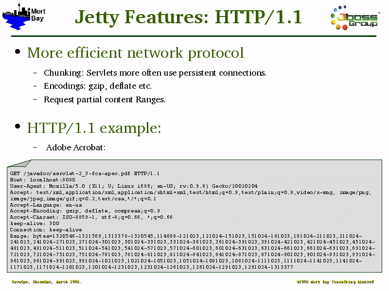

Notes:
The example WWW request is shown to indicate:
That HTTP/1.1 is rather complex
There are lots of headers that somebody should interpret. Preferably the container rather than your servlet.
A good example of how ranges can be used, in this case Acrobat is getting the table of context and first page of each chapter.